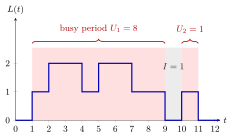

Busy Period¶
Definition¶
A busy period, or busy time, of a single server is the time from an arrival that finds the system empty until the server next becomes idle. An idle period is the time from the end of a busy period until the next arrival. A work-conserving server therefore alternates idle and busy periods.
For the queue with arrival rate , mean service time and load ,
Interpretation¶
A busy period is one uninterrupted stretch of work. It starts with a job that finds the server free and lasts until all work has been cleared, including every job that arrived in the meantime; its length is the sum of the service times of the jobs served in it.

The figure is Example 1. The number in the system first becomes positive at and stays positive until : the first busy period, of length , serves jobs 1 to 4. The server is then idle until job 5 arrives at , which starts a second busy period of length .
Both formulas rest on Poisson arrivals. During the first service an expected new jobs arrive, by Adam's law with . Each of them starts a busy period of its own, independent of the others and with the same mean, which gives . Likewise, by the memoryless property, the time from the end of a busy period to the next arrival is again exponential with mean . Without Poisson arrivals both steps fail (Example 4). The condition is needed too: for the equation has no finite positive solution.
Since explodes as , a heavily loaded server rarely gets a rest. In Week 4 the alternation of busy and idle periods gives .
A common slip is to confuse the busy period with a single service time or with one job's sojourn time; a busy period usually serves several jobs.
Key Results¶
- For a work-conserving single server, the length of a busy period equals the total service time of the jobs served in it.
- with (Section 4.1, (4.1.3)): and , so .
- For the busy period has no finite mean, and the formula must not be used.
- Week 4 (Ex 4.3.7, by the renewal reward theorem): for a stable queue, .
- Week 5: in the queue it takes on average to clear jobs, a building block of the N-policy analysis.
Examples¶
1. Busy periods on a sample path. Jobs arrive at with service times and leave at . Job 1 finds the system empty and starts a busy period. Jobs 2, 3 and 4 arrive before the system empties (, , ), so the busy period lasts until : . Job 5 arrives at , after an idle period , and forms a busy period on its own.
2. The notes' example. With and , and . Then and . Counting jobs with the same argument, the number served in a busy period satisfies , so , and indeed . Also .
3. Sensitivity to the load. In units of , the mean busy period is : for , for , for and for . For instance, per hour and minutes give , hour and minutes.
4. Non-Poisson arrivals. Let jobs arrive at , so , with service time , so . From on, every busy period is , serves two jobs and lasts , and every idle period lasts . The formulas would predict and , both twice too large, because arrivals are neither Poisson nor memoryless. The relation still holds.
Prerequisites¶
Related Concepts¶
- Server Utilization
- Workload
- M/M/1 Queue
- Renewal Reward Theorem
- N-Policy
- Server Setup
- Pollaczek-Khinchine Formula
Sources¶
- Stochastic Operations Research · Week 3
- N. D. van Foreest, Sample Path Analysis and Simulation of Stochastic Systems, Section 4.1
Aliases: busy time, idle period, idle time, M/G/1 busy period Keywords: U, I, \mathbb{E}[U] = \mathbb{E}[S]/(1-\rho), \mathbb{E}[I] = 1/\lambda, \mathbb{E}[U] = \mathbb{E}[S] + \lambda\mathbb{E}[S]\mathbb{E}[U], busy and idle periods, arrival to an empty system Symbols: lambda, mu, rho
Last updated: 29 October 2026 20:42
Busy PeriodN-PolicyRenewal Reward TheoremServer LoadKendall's NotationPoisson ProcessMemoryless PropertyAdam’s Law: Total ExpectationServer UtilizationWorkloadM/M/1 QueueServer SetupPollaczek-Khinchine Formula